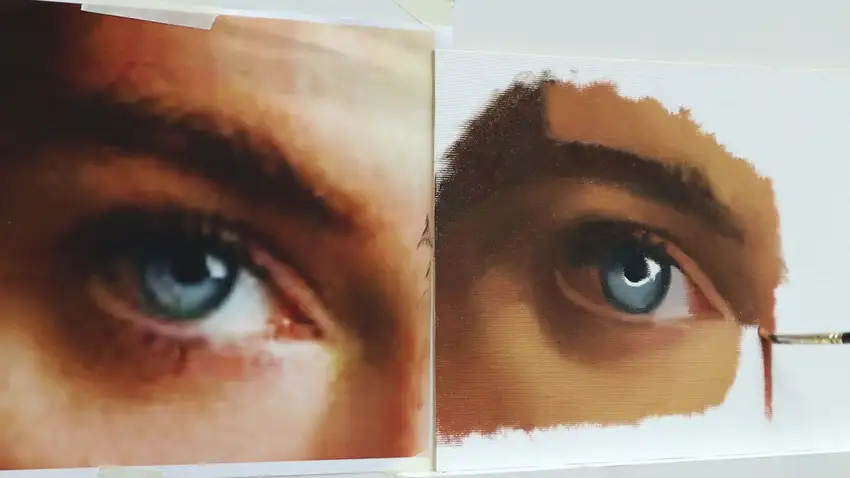

Konstrukcija in proporci
Kako motiv razdeliti na točke, linije, kote in proporcionalne oblike.
Poglobljen 3,5-urni video tutorial, v katerem kompleksno sliko razdelimo na konstrukcijo, oblike senc, vrednosti, barvo in modeliranje tridimenzionalne forme.

Namesto da poskušaš takoj »naslikati oko«, rešuješ en problem za drugim. Tako zahtevna realistična slika postane zaporedje razumljivih odločitev.

Pomembne točke, koti, razmerja in velike oblike.

Razporeditev svetlobe, sence in ključnih barvnih odnosov.
Gradienti, robovi in detajli, ki ustvarijo občutek prostornine.
Kako motiv razdeliti na točke, linije, kote in proporcionalne oblike.
Kako prepoznati velike in manjše senčne mase ter jih natančno postaviti.
Orbitalna votlina, veke in okoliške obrazne strukture kot izhodišče za slikanje.
Kako tonske spremembe sledijo obračanju površine glede na svetlobo.
Kako ploskve, vrednosti in mehčanje robov ustvarijo tridimenzionalen občutek.
Ton, barva in intenziteta barve ter praktično uravnavanje mešanic za svetlobo in senco.
PDF-ji so namenjeni kupcem in jih lahko uporabljaš ob videu kot hitro referenco med delom.
Konstrukcija, anatomija, oblike senc, gradient tona, modeliranje forme, barvna paleta in mešanje barv.
Vizualni pripomoček za merjenje, prenos kotov in gradnjo proporcionalnih kompleksnih oblik.
Pregled slikarskih materialov in barv, ki jih lahko pripraviš pred začetkom dela.
»Ni potrebno, da že znaš slikati na tej ravni. Zahtevno sliko najprej razdeliš na probleme, ki jih lahko opazuješ, meriš in postopoma rešuješ.«
Poudarek je na konstrukciji, proporcih, vrednostih, ploskvah, barvnih odnosih in modeliranju forme. Namen ni le posnemanje demonstracije, ampak razumevanje principov, ki jih lahko preneseš na druge motive.
Po uspešnem nakupu prejmeš e-mail z navodili in povezavo za dostop.
Da. V nakup so vključeni vsi trije spremljevalni PDF pripomočki.
Celoten tutorial traja približno 3,5 ure.
Da. Proces je razdeljen na posamezne korake, hkrati pa vsebuje dovolj poglobljene vsebine tudi za bolj izkušene ustvarjalce.
Video je namenjen spletnemu ogledu; PDF pripomočki so kupcu na voljo za prenos.
3,5-urni video tutorial + 3 PDF pripomočki.